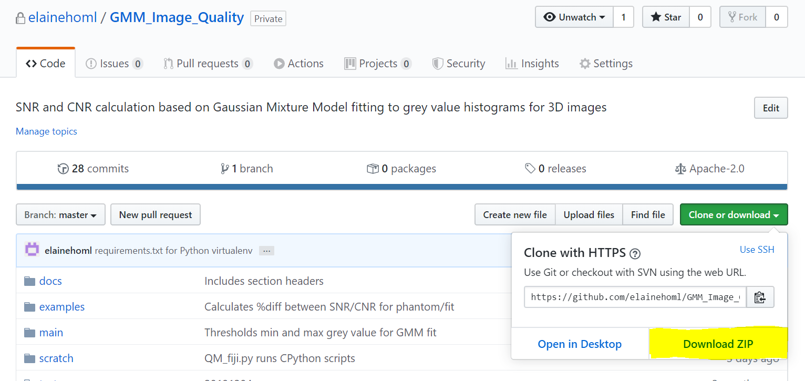
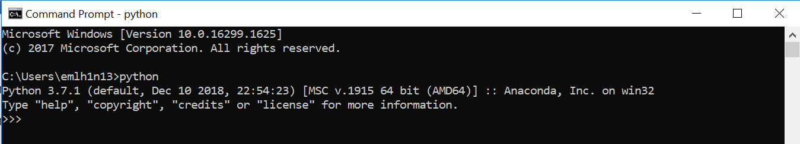

Installation¶
Main prerequisites¶
To run this software tool, you must
- have (Fiji Is Just) ImageJ
- be able to run CPython 3.7.1 scripts from the command line.
The following sections contain installation instructions for all that is required to run this tool. Feel free to skip sections if you already have these installed.
This tool is currently only available for Windows users.
Obtaining code (Git)¶
If you are comfortable with Git, navigate to a directory of your choice and clone the repository.
git clone https://github.com/elainehoml/GMM_Image_Quality.git
Alternatively, the repository can be downloaded as a .zip file from https://github.com/elainehoml/GMM_Image_Quality.
You will have to unzip the download to a directory of your choice.
Anaconda download¶
Anaconda Distribution is a free Python distribution with its own package and environment manager.
More information on downloading and installing Anaconda.
Please ensure that you add Python to PATH so that Python scripts can be run from the command line.
To test if this requirement is satisfied, open a command prompt window and type ‘python’
Python virtual environment¶
Python virtual environments are used to install specific versions of Python libraries without affecting the local Python installation on your machine.
To activate a virtual environment,
- Open a command prompt window and navigate to the directory where the code repository is stored.
cd <repository directory>
- Create a virtual environment in the repository directory. This creates a virtual Python installation in the ‘env’ folder.
py -m venv env
- Activate the virtual environment
cd env/scripts
activate.bat
- To check that you are in the correct virtual environment,
where python
should return
.../env/bin/python.exe
- Install the libraries required for this tool by running
cd ../..
pip install -r requirements.txt
Software dependencies¶
This software tool was built using
(Fiji Is Just) ImageJ 2.0.0-rc-69/1.52p; Java 1.8.0_172 [64-bit]
CPython 3.7.1 with the following libraries
- numpy 1.15.4
- scipy 1.1.0
- matplotlib 3.0.2
- pandas 0.23.4
- scikit-image 0.14.1
- scikit-learn 0.20.1
Windows 10 Enterprise Version 1709 OS Build 16299.1625